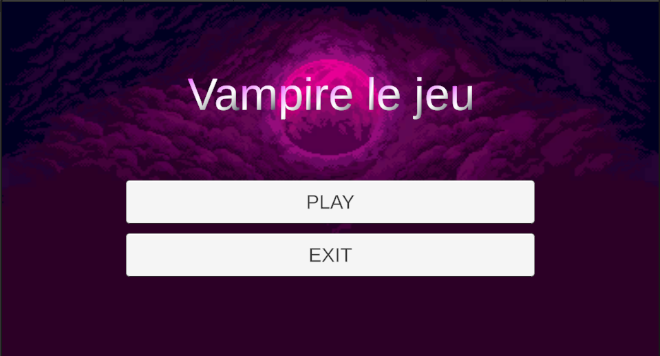
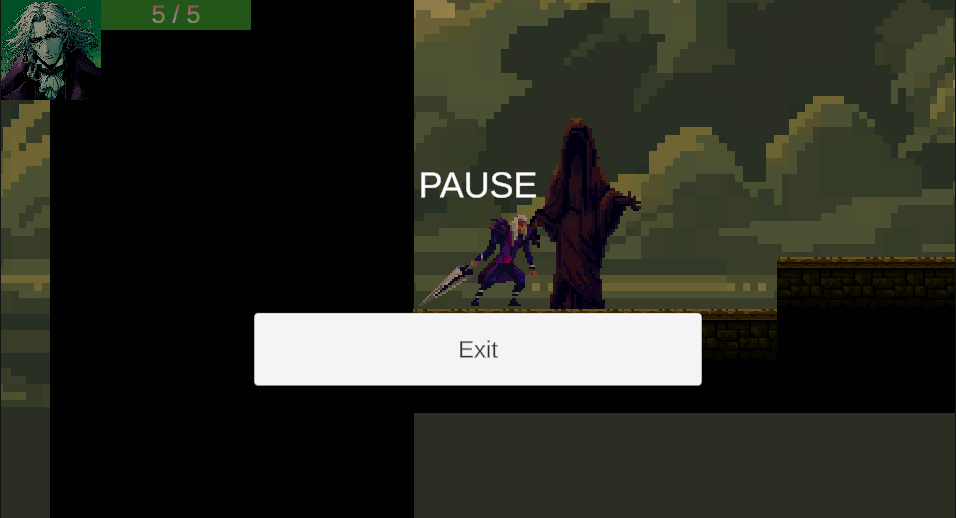
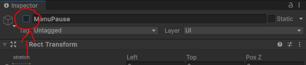

Création du menu principal
Il est maintenant temps de passer à la création d’un menu principal pour notre jeu. Nous allons créer un menu simple avec deux boutons : “Play” pour démarrer le jeu et “Exit” pour quitter.

Voici les étapes détaillées :
-
Créer une nouvelle scène : Dans Unity, allez dans le menu File > New Scene et enregistrez-la sous le nom MainMenu. Cette scène sera dédiée à l’interface de menu principal.
-
Ajouter la scène au Build Settings : Pour que cette scène soit lancée en premier lorsque le jeu démarre, ouvrez le Build Settings (menu File > Build Settings) et ajoutez votre nouvelle scène MainMenu en cliquant sur Add Open Scenes. Assurez-vous qu’elle soit en première position dans la liste.
-
Créer le Canvas pour le Menu Principal : Faites un clic droit dans la hiérarchie et choisissez UI > Canvas. Renommez ce canvas en MainMenuCanvas. Ce canvas contiendra tous les éléments du menu.
-
Ajouter une Image de Fond : Faites un clic droit sur le Canvas et choisissez UI > Image. Étirez cette image pour qu’elle prenne toute la place sur le Canvas en cliquant sur l’option Stretch dans l’inspecteur. Cette image pourra servir de fond pour le menu.
-
Ajouter un Layout Vertical : Sélectionnez l’image de fond dans la hiérarchie et, dans l’inspecteur, ajoutez un composant Vertical Layout Group. Ce composant permet d’organiser facilement les éléments enfants verticalement.
-
Ajouter le Titre et les Boutons :
-
Titre : Faites un clic droit sur l’image de fond et choisissez UI > Text. Ce texte représentera le titre de votre jeu. Modifiez le texte et la police selon vos préférences (par exemple : “Titre du Jeu”).
-
Boutons : Faites un clic droit sur l’image de fond et ajoutez deux boutons (UI > Button). Renommez le texte des boutons en “Play” pour démarrer le jeu et “Exit” pour quitter l’application.
-
MainMenu
Nous allons créer un script appelé MainMenu, qui aura pour fonction principale de gérer les interactions de base du menu principal de notre jeu. Ce script comportera deux méthodes essentielles : l’une pour quitter le jeu et l’autre pour charger la première scène du jeu.
private bool isLoading = false; // Empêche de lancer plusieurs chargements en même temps
public string levelToLoad; // Le nom du niveau à charger, paramétré dans l'Inspector
Dans notre script MainMenu, nous avons deux variables essentielles :
-
private bool isLoading = false;
- Cette variable sert à indiquer si un chargement de scène est en cours. En la définissant sur true lorsqu’un chargement commence, nous empêchons les utilisateurs de déclencher plusieurs chargements simultanément. Cela évite les conflits qui pourraient survenir si l’utilisateur tente de charger un niveau pendant qu’un autre est déjà en cours.
-
public string levelToLoad;
- Cette variable stocke le nom du niveau à charger, qui peut être configuré directement dans l’Inspector de Unity. En rendant cette variable publique, nous permettons aux développeurs de spécifier facilement quel niveau doit être chargé lorsque l’utilisateur clique sur le bouton “Jouer”. Cela simplifie la gestion des différentes scènes du jeu et rend le script plus flexible.
// Méthode pour quitter l'application
public void Exit()
{
if (!isLoading) // Si le chargement n'est pas en cours, on peut quitter
{
Debug.Log("Quitter l'application.");
Application.Quit(); // Quitte l'application (fonctionne dans une build, pas dans l'éditeur)
}
}
La méthode Exit dans ce script est utilisée pour quitter l’application lorsque le joueur clique sur le bouton correspondant dans le menu principal. Elle vérifie d’abord que le chargement d’une scène n’est pas déjà en cours (!isLoading), pour éviter des conflits.
Si la condition est respectée, le message “Quitter l’application.” est affiché dans la console avec Debug.Log, puis Application.Quit() est appelé pour fermer l’application. Il est important de noter que Application.Quit() ne fonctionne que dans une version buildée du jeu, pas dans l’éditeur Unity. Cela permet d’assurer un comportement propre lors de la fermeture du jeu.
// Méthode pour lancer le niveau spécifié de manière asynchrone
public void Play()
{
if (!isLoading && !string.IsNullOrEmpty(levelToLoad)) // Si le chargement n'est pas déjà en cours et que le nom de la scène est spécifié
{
Debug.Log("Lancement du niveau : " + levelToLoad);
StartCoroutine(LoadLevelAsync(levelToLoad)); // Charge le niveau spécifié
}
else if (string.IsNullOrEmpty(levelToLoad))
{
Debug.LogWarning("Aucun niveau à charger n'a été spécifié !");
}
}
// Coroutine pour charger la scène de manière asynchrone avec une string
IEnumerator LoadLevelAsync(string sceneName)
{
isLoading = true; // Bloque l'accès aux méthodes pendant le chargement
// Commence à charger la scène asynchrone
AsyncOperation asyncLoad = SceneManager.LoadSceneAsync(sceneName);
// Tant que la scène n'est pas complètement chargée, affiche la progression dans la console
while (!asyncLoad.isDone)
{
float progress = Mathf.Clamp01(asyncLoad.progress / 0.9f); // Normalise la progression entre 0 et 1
Debug.Log("Chargement en cours : " + (progress * 100f) + "%");
yield return null; // Attend la prochaine frame avant de continuer
}
Debug.Log("Niveau " + sceneName + " chargé !");
isLoading = false; // Réactive les méthodes une fois le chargement terminé
}
La méthode Play sert à lancer le jeu en chargeant un nouveau niveau, spécifié dans l’Inspector via la variable levelToLoad. Comme pour Exit, elle commence par vérifier que le chargement d’une scène n’est pas déjà en cours et que le nom de la scène à charger n’est pas vide.
Si toutes les conditions sont réunies, elle démarre une coroutine (StartCoroutine(LoadLevelAsync(levelToLoad))) pour charger le niveau de manière asynchrone, ce qui permet de continuer à exécuter d’autres tâches pendant le chargement de la scène. Si levelToLoad n’a pas été défini, un avertissement est affiché dans la console avec Debug.LogWarning.
La méthode LoadLevelAsync se charge ensuite du processus de chargement lui-même, en suivant l’avancement avec une barre de progression virtuelle qui affiche les pourcentages dans la console jusqu’à ce que le niveau soit complètement chargé.
Coroutines
Les coroutines en Unity sont des méthodes spéciales qui permettent d’exécuter des actions sur plusieurs frames, ce qui est particulièrement utile pour gérer des opérations asynchrones ou des animations sans bloquer le fil d’exécution principal du jeu.
Contrairement aux méthodes classiques qui s’exécutent jusqu’à leur fin, les coroutines peuvent être suspendues à des moments spécifiques et reprises plus tard, ce qui permet de créer des comportements fluides.
using UnityEngine;
using System.Collections;
public class BlinkingObject : MonoBehaviour
{
public float blinkDuration = 1f; // Durée entre chaque clignotement
private Renderer objectRenderer;
void Start()
{
objectRenderer = GetComponent<Renderer>();
StartCoroutine(Blink());
}
private IEnumerator Blink()
{
while (true) // Boucle infinie pour le clignotement
{
objectRenderer.enabled = !objectRenderer.enabled; // Alterne l'état de visibilité
yield return new WaitForSeconds(blinkDuration); // Attend avant de clignoter à nouveau
}
}
}
Création d’un Menu de Pause
Bien maintenant, nous voulons créer un moyen de passer du jeu au menu principal afin de quitter le jeu. Pour cela, débutons par ajouter au canvas un menu de pause avec marqué “Pause” et un bouton “Exit”.

Procédure d’Ajout au Canvas
-
Ajouter une Image d’Arrière-Plan :
- Faites un clic droit sur le Canvas, puis sélectionnez UI > Image.
- Renommez l’image en BackgroundImage. Modifiez ses propriétés pour qu’elle couvre tout le canvas (Position à 0,0 et Width/Height à 0 pour l’étirer). Changez la couleur à noir et l’opacité à 0.5 pour un effet transparent.
-
Ajouter le Texte “Pause” :
- Faites un clic droit sur l’image d’arrière-plan et sélectionnez UI > Text (ou TextMeshPro).
- Renommez le texte en PauseText, et dans l’inspecteur, modifiez-le pour afficher “Pause”. Ajustez la taille de police et la couleur pour qu’il soit bien visible.
-
Ajouter un Bouton “Exit” :
- Faites un clic droit sur l’image d’arrière-plan et sélectionnez UI > Button.
- Renommez ce bouton en ExitButton. Changez le texte en “Exit” et positionnez-le sous le texte “Pause”.
Création d’un script MenuPause
Dans ce script MenuPause, nous allons implémenter un système de pause pour notre jeu. Ce système permettra au joueur de mettre le jeu en pause en appuyant sur la touche Échap, d’afficher un menu de pause, et de retourner au menu principal. Le script gère également la mise à jour du temps du jeu, arrêtant et reprenant le temps selon l’état de pause.
LoadMainMenu()
// Méthode pour retourner au menu principal
public void LoadMainMenu()
{
Time.timeScale = 1f; // S'assure que le temps n'est plus en pause
SceneManager.LoadScene("MainMenu"); // Charge la scène du menu principal
}
Cette méthode permet de retourner au menu principal en s’assurant que le temps du jeu est repris avant de charger la scène correspondante. Elle utilise SceneManager.LoadScene(“MainMenu”) pour changer de scène.
public GameObject pauseMenuUI; // Référence à l'UI du menu de pause
private bool isPaused = false; // État du jeu (en pause ou non)
Variables
-
public GameObject pauseMenuUI: Cette variable référence l’interface utilisateur du menu de pause que nous avons créée précédemment. Elle sera activée ou désactivée selon que le jeu est en pause ou non.
-
private bool isPaused: Un booléen qui détermine si le jeu est en pause (true) ou non (false).
PauseGame()
// Méthode pour mettre en pause le jeu
public void PauseGame()
{
pauseMenuUI.SetActive(true); // Affiche le menu de pause
Time.timeScale = 0f; // Arrête le temps dans le jeu
isPaused = true; // Met à jour l'état de pause
}
La méthode PauseGame() est responsable de mettre le jeu en pause et d’afficher le menu de pause. Voici les étapes détaillées :
-
Affichage du menu de pause :
- Cette ligne active le menu de pause en modifiant la propriété SetActive de l’objet pauseMenuUI. Cela rend l’interface utilisateur visible à l’écran, permettant au joueur de voir qu’il est en pause.
-
Arrêt du temps :
- En définissant Time.timeScale à 0, tous les éléments du jeu qui dépendent du temps (comme les mouvements, les animations et les effets de physique) sont suspendus. Cela crée l’effet de pause, permettant au joueur de réfléchir ou de faire des choix sans pression.
-
Mise à jour de l’état de pause :
- Cette ligne met à jour la variable isPaused pour indiquer que le jeu est maintenant en pause. Cela peut être utile pour d’autres méthodes ou logiques de jeu qui doivent connaître l’état actuel du jeu.
Par défaut, notre image dans le Canvas est désactivée. Vous pouvez la désactiver en décochant la case correspondante dans l’inspecteur. Cependant, il est important de noter qu’une fois désactivée, la méthode Update() de cet objet ou de ses enfants ne s’exécute plus.
Pour garantir que le script continue à fonctionner, placez-le en dehors du panel qui sera activé et désactivé. Cela permet de maintenir le contrôle du jeu, même lorsque le menu de pause est masqué.

ResumeGame()
// Méthode pour reprendre le jeu
public void ResumeGame()
{
pauseMenuUI.SetActive(false); // Cache le menu de pause
Time.timeScale = 1f; // Reprend le temps dans le jeu
isPaused = false; // Met à jour l'état de pause
}
La méthode ResumeGame() est utilisée pour reprendre le jeu après une pause.
Voici les détails :
-
Masquage du menu de pause :
- Cette ligne désactive le menu de pause, rendant l’interface utilisateur invisible à l’écran. Cela indique au joueur qu’il reprend le jeu.
-
Reprise du temps :
- En définissant Time.timeScale à 1, le jeu reprend son rythme normal. Tous les éléments du jeu recommencent à fonctionner comme prévu, permettant au joueur de continuer à jouer.
-
Mise à jour de l’état de pause :
- Cette ligne met à jour isPaused pour indiquer que le jeu n’est plus en pause. Cela peut être important pour d’autres parties du code qui doivent savoir si le jeu est actif ou non.
void Update()
{
// Vérifie si la touche Échap est pressée
if (Input.GetKeyDown(KeyCode.Escape))
{
if (isPaused)
{
ResumeGame(); // Si le jeu est en pause, on reprend le jeu
}
else
{
PauseGame(); // Sinon, on met en pause
}
}
}
La méthode Update() vérifie chaque image si la touche Échap est pressée. Si le jeu est en pause, elle appelle ResumeGame() pour reprendre le jeu, sinon, elle appelle PauseGame() pour mettre le jeu en pause.